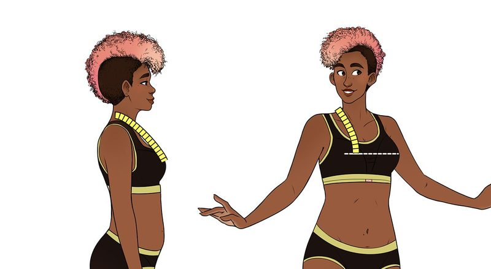

Sept mesures suffisent. Prenez-les sur vous ou sur la personne concernée, en sous-vêtements ou avec des vêtements très fins, le mètre ruban à plat contre le corps, sans serrer. Pour les mesures de poitrine, portez le soutien-gorge que vous mettrez sous la robe.
Choisissez votre taille et votre stature au premier écran pour les préremplir : corrigez ensuite celles que vous pouvez prendre.
À vérifier en priorité : poitrine devant, poitrine haute devant, longueur devant taille, tour de bassin.
Poitrine, partie devantà vérifier : Partie devant du tour de poitrine : sur la partie la plus forte, en passant sur les seins, d’une couture de côté à l’autre.Poitrine haut, partie devantà vérifier : Partie devant du tour de poitrine haut : juste sous les bras, au-dessus des seins, d’une couture de côté à l’autre.Longueur devant taille : Du point haut de l’épaule (au ras du cou), tout droit sur le devant jusqu’à la taille, en passant sur la poitrine sans creuser sous les seins.Tour de bassin : Autour de la partie la plus forte des fesses, ruban bien horizontal.Largeur d’épaules : Dans le dos, d’un bout d’épaule à l’autre. Le bout d’épaule est la pointe de l’os, là où le dessus de l’épaule rejoint le bras : c’est là que tombe la couture d’épaule d’une chemise bien ajustée.Écart entre les pointes de seins : En ligne droite, horizontalement, d’une pointe de sein à l’autre.

Épaule à hauteur de sein : Du point haut de l’épaule, descendez verticalement jusqu’à la ligne du tour de poitrine. Tenez le ruban avec la main opposée : lever le bras du même côté fausse la mesure d’environ 2,5 cm. Le mieux est de vous faire mesurer.
Quelqu’un coud pour vous ?
Prenez vos mesures avec ce guide, saisissez-les sur la page du patron, puis cliquez sur « Partager ». La personne qui coud recevra un lien qui ouvre le patron déjà réglé à vos mesures. Le lien ne passe par aucun serveur : vos mesures ne sont envoyées qu’à elle.